flowchart
A(Decide Access Goals) --> B(Check Gap Analysis)
B <--> C(Identify Feasible Locations)
D(Find Willing Host) <--> C
B <--> D
C --> E("Purchase Monitor(s)")
E --> F("Install Monitor(s)")
F --> A
How can we improve access to smoke monitoring in Canada?
Applied Air Quality Scientist, ECCC (AQ Science Unit - West)
June 11, 2026
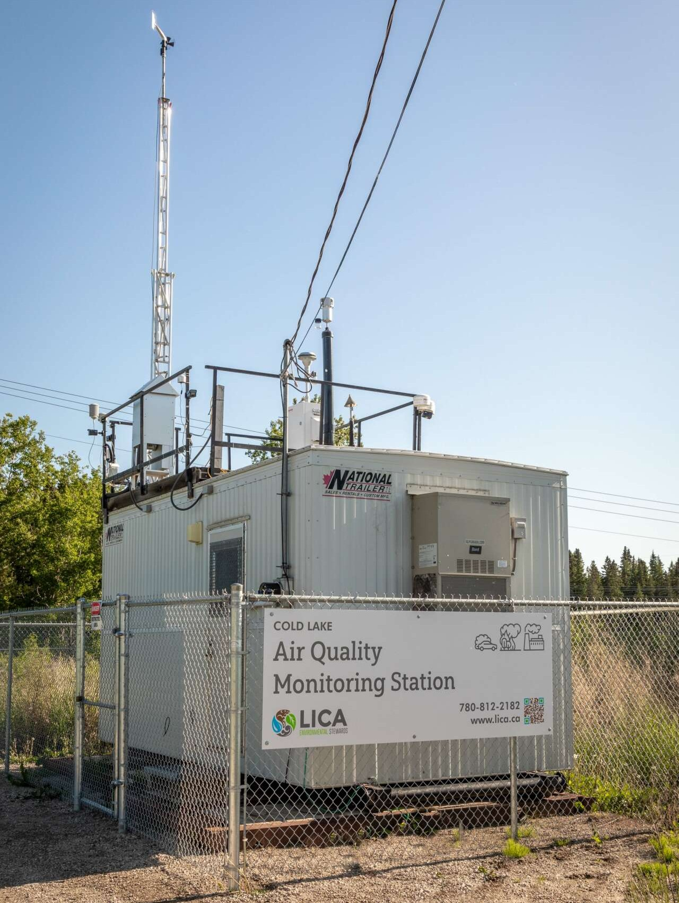
1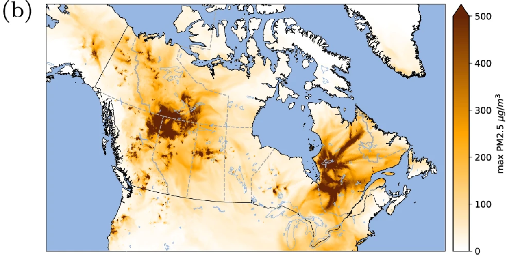
2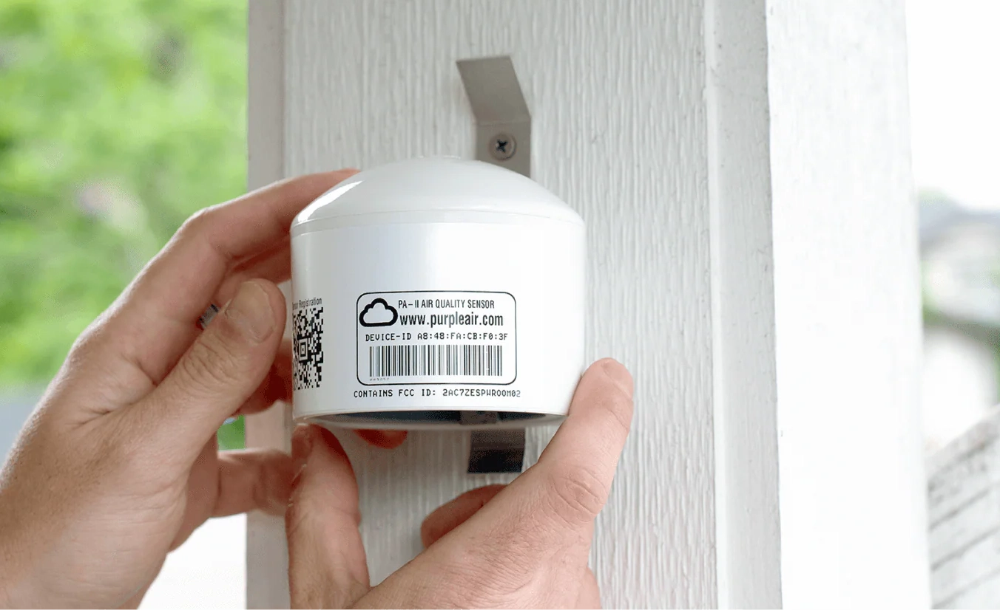
1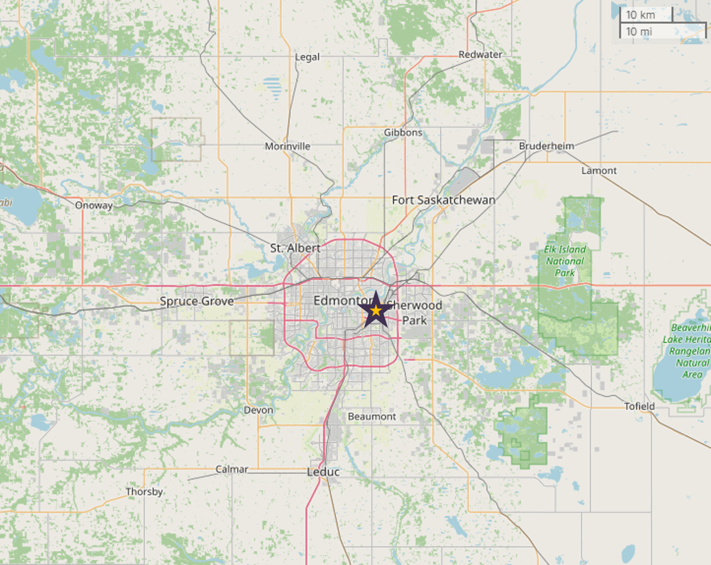
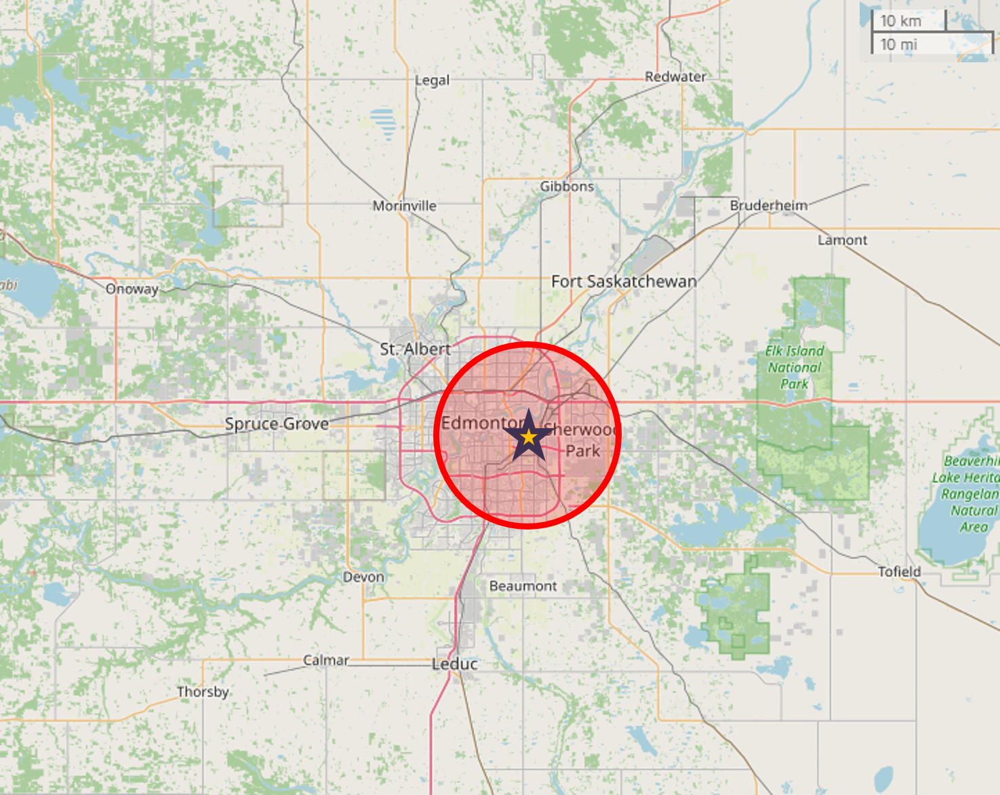
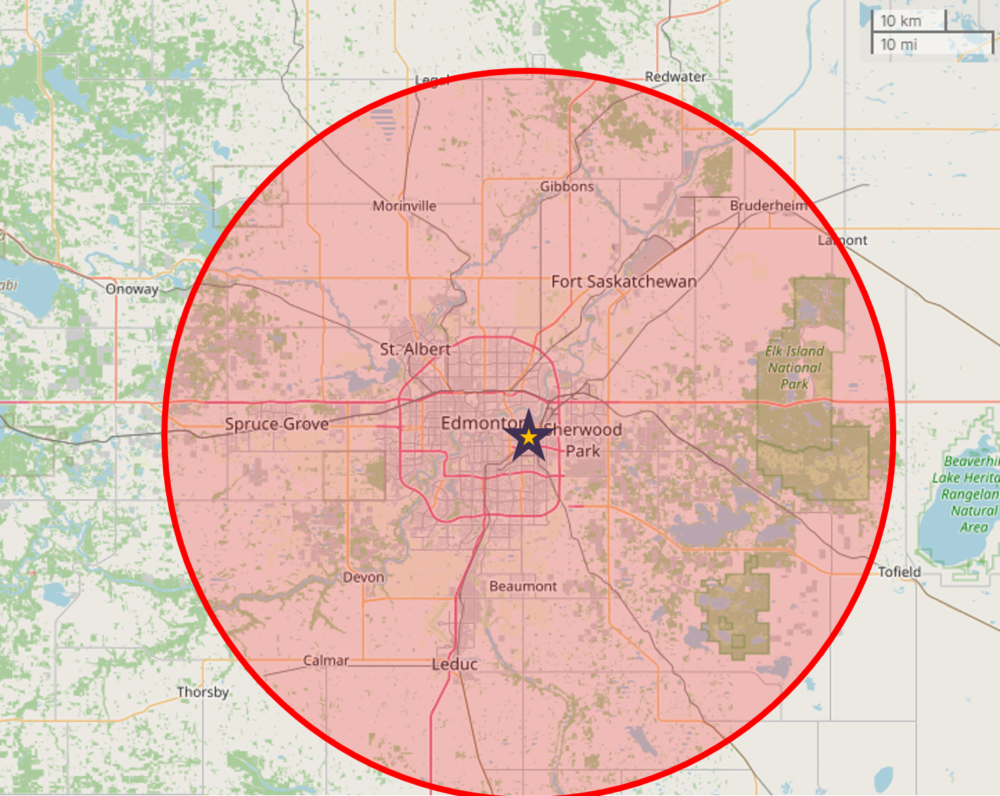
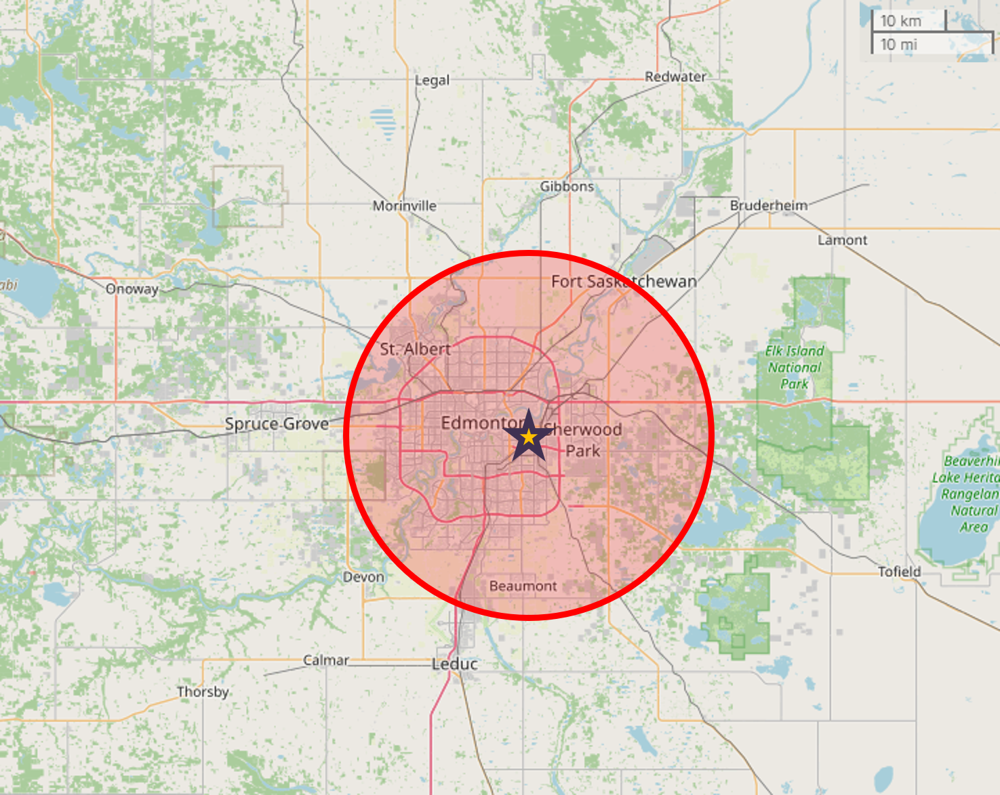
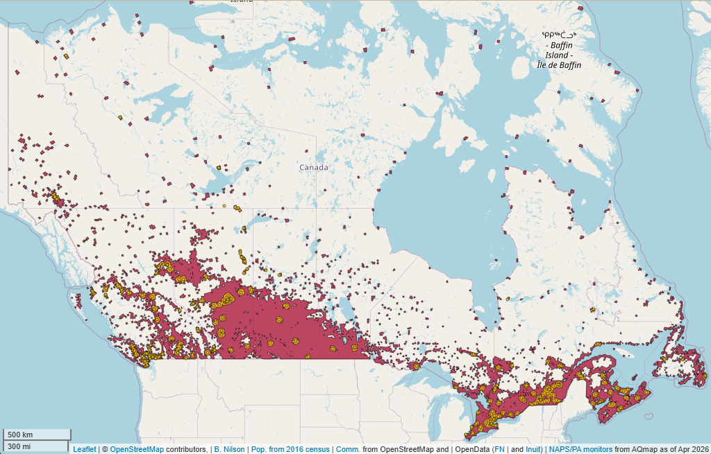
1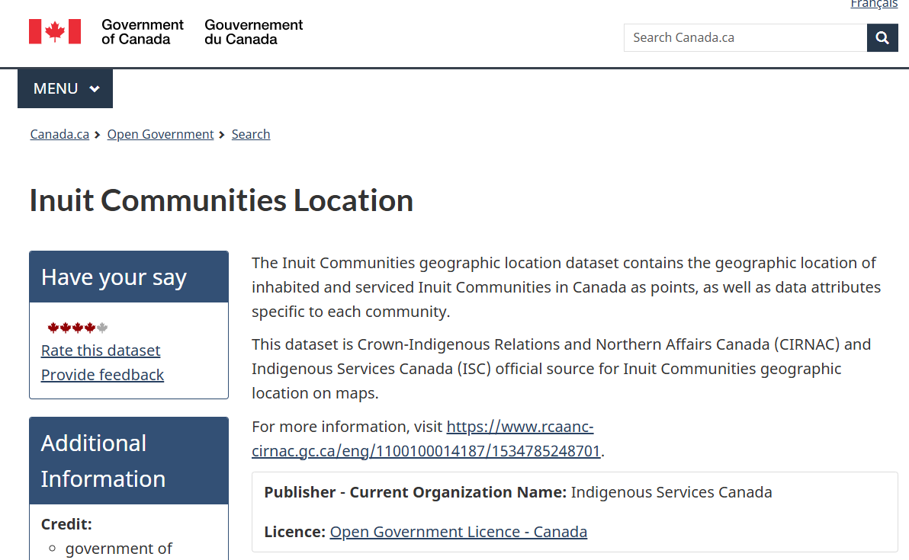
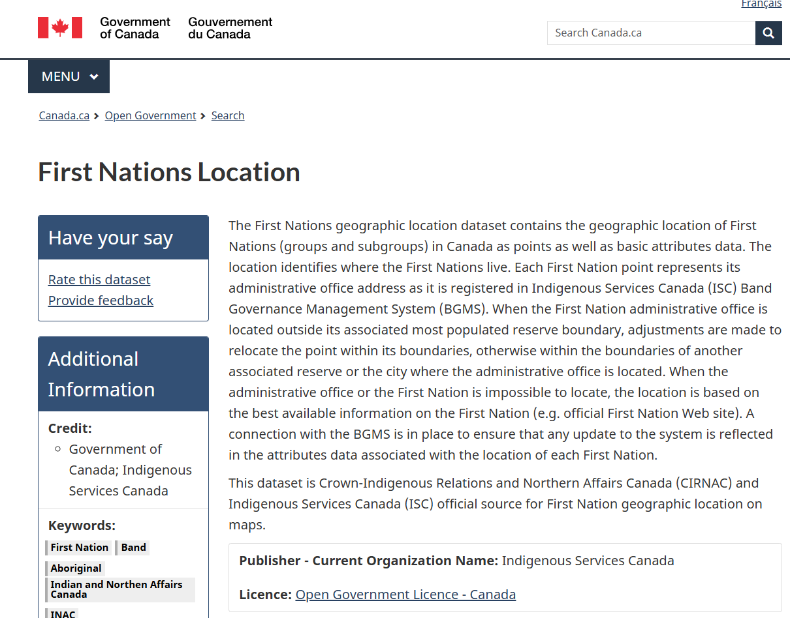
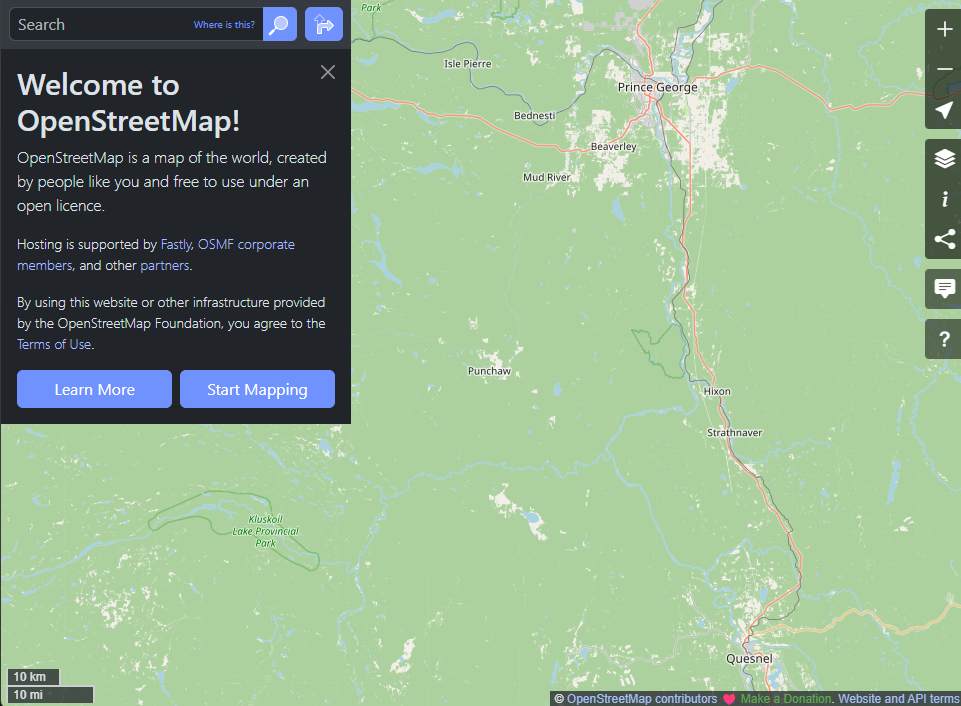
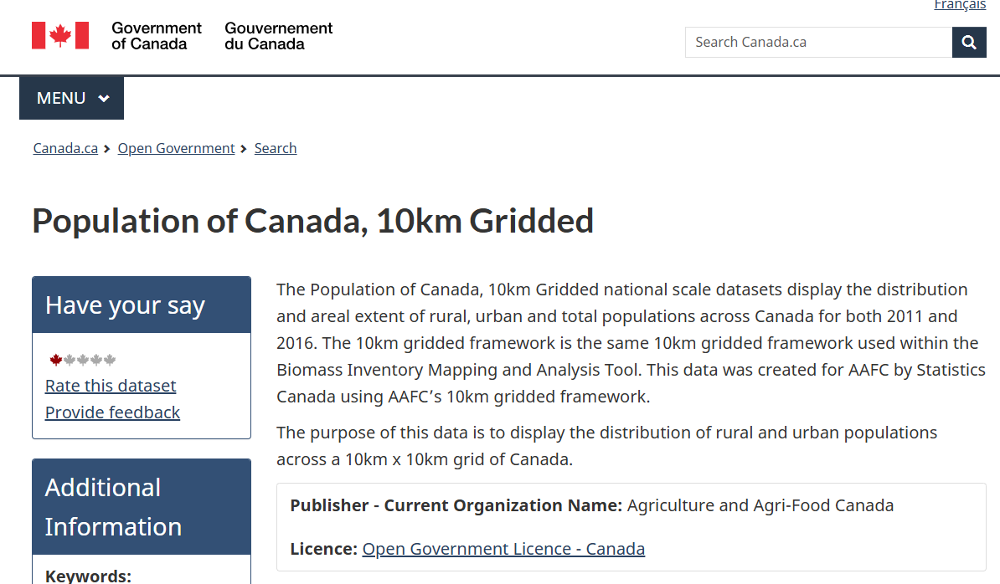
2016 Census used – lack of 2021 gridded data
Which communities could a monitor be installed in, such that someone without a monitor within 25 km would now be covered?
Need:
flowchart
A(Decide Access Goals) --> B(Check Gap Analysis)
B <--> C(Identify Feasible Locations)
D(Find Willing Host) <--> C
B <--> D
C --> E("Purchase Monitor(s)")
E --> F("Install Monitor(s)")
F --> A
Questions? Want access to the automated report?
brayden.nilson@ec.gc.ca
Interested in performing a similar analysis? See:
Brayden Nilson · Canada PM2.5 Gap Analysis